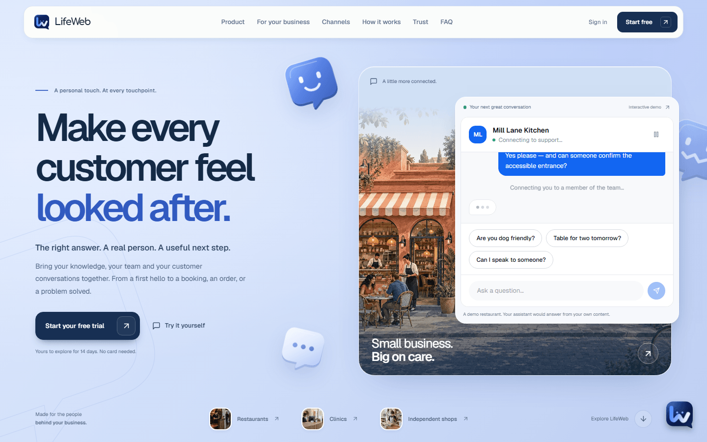

Benagon · Conversational AI
Every customer, looked after. A shared inbox for website chat, email and bookings, with conversational AI that trains on a business's own approved content to answer routine questions — then hands off to a person, with full context, when it can't help. Samson built this at Benagon before moving on to found Acsaven.
This is an offline summary, not a live mirror — LifeWeb is a Benagon product, built and hosted by the company.

Website chat, email and bookings land in a single workspace instead of fragmented channels.
The assistant draws answers from business-approved content — menus, policies, guides — and shows the source behind each reply.
When a query needs human judgement, it hands off to a team member with the full conversation history attached.